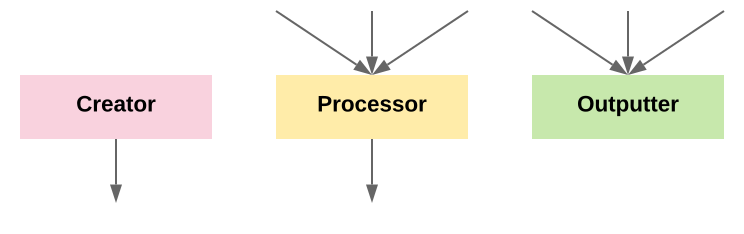
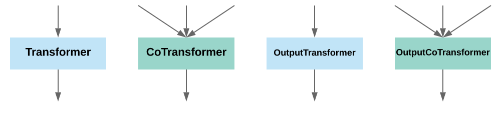

Execution Graph (DAG)¶
This is the most important tutorial you need to read through.
The construction of workflow and the construction of ExecutionEngines can be totally decoupled. But you can also couple them, this may be useful when you need to use certain config in an ExecutionEngine.
In fugue, workflow is static, it is strictly the description or spec of your logic flow, and it has nothing to do with execution. When you finish writing the workflow spec, you can also choose a Fugue ExecutionEngine and an Adagio workflow ExecutionEngine for the end to end execution. The Adagio workflow ExecutionEngine will turn your workflow spec into a workflow instance (nodes specs will also turn to node instances) and execute in certain order. For example Adagio default ExecutionEngine SequentialExecutionEngine will run everything sequentially in the order you list in the workflow spec. In each node of the execution graph, it will use the given Fugue ExecutionEngine. And the edges of the graph is always DataFrame
Graph Nodes - Extensions¶
There are only 3 types of nodes in Fugue workflow. They are also called driver side extensions.

Creator: no input, single output dataframe, it is to produce dataframe input for other types of nodes, for example load file or create mock data
Processor: one or multiple input dataframes, single output dataframe, it is to do certain transformation and pass to the next node
Outputter: one or multiple input dataframes, no input, it is to finalize the process of the input, for example save or print
All these nodes/extensions are executed on driver side and they are ExecutionEngine aware. For example if you really want to use certain features of RDD, you can write your native Spark code in a Processor because inside a processor, you can access the ExecutionEngine and if it is SparkExecutionEngine, you can get spark_session. There will be examples in this tutorial.
There are two special types of Processor: Transformer and CoTransformer. They are special because they are NOT ExeuctionEngine aware, and their exposed interface is to describe the job to do on worker side not driver side.

Transformer: single
LocalDataFramein, singleLocalDataFrameoutCoTransformer: one or multiple
LocalDataFramein, singleLocaDataFrameoutOutputTransformer: single
LocalDataFramein, no outputOutputCoTransformer: one or multiple
LocalDataFramein, no output
They only care about how to process a partition of the dataframe(s) on a local machine.
. |
Creator |
Processor |
Outputter |
Transformer |
CoTransformer |
OutputTransformer |
OutputCoTransformer |
|---|---|---|---|---|---|---|---|
Input |
0 |
1+ |
1+ |
1 |
1+ |
1 |
1+ |
Output |
1 |
1 |
0 |
1 |
1 |
0 |
0 |
Side |
Driver |
Driver |
Driver |
Worker |
Worker |
Worker |
Worker |
Engine Aware |
Yes |
Yes |
Yes |
No |
No |
No |
No |
Fugue orchestrates its extensions in Fugue Workflows
Initialize a Workflow¶
from fugue import FugueWorkflow
dag = FugueWorkflow()
df = dag.df([[0]],"a:int")
df.show()
As you can see, nothing printed, this is because you only described what you want to do but you didn’t really execute the dag. To run it:
dag.run()
If you want to make it run automatically, use with statement
with FugueWorkflow() as dag:
df = dag.df([[0]],"a:int")
df.show()
However, where did I setup the ExecutionEngine? So actually by default, FugueWorkflow will use NativeExecutionEngine, in order to setup your own ExecutionEngine, you can do:
from pyspark.sql import SparkSession
from fugue_spark import SparkExecutionEngine
dag = FugueWorkflow()
df = dag.df([[0]],"a:int")
df.show()
# see all the expensive initialization is after the dag is constructed, the steps above are fast
# if you have any obvious issue, they will fail fast,
# they are compile time problems and the below is all about runtime
spark_session = (SparkSession
.builder
.config("spark.executor.cores",4)
.getOrCreate())
my_engine = SparkExecutionEngine(spark_session)
dag.run(my_engine)
# You can also do the following, but you move the dag construction to be after building spark session
# so at least you have to wait until the spark session is initialized, you can know if there is compile problems
with FugueWorkflow(my_engine) as dag:
df = dag.df([[0]],"a:int")
df.show()
Create Dataframes & Basic operations¶
import pandas as pd
from fugue import FugueWorkflow, ArrayDataFrame
dag = FugueWorkflow()
# You can pass in raw data, pandas dataframe or Fugue DataFrames
dag.df([[0]],"a:int").show(title="from raw data")
dag.df(pd.DataFrame([[0]], columns=["a"])).show(title="from pandas")
dag.df(ArrayDataFrame([[0]],"a:int")).show(title="from Fugue DataFrame")
# basic operations
df=dag.df(ArrayDataFrame([[0,1,2]],"a:int,b:int,c:int"))
df[["c","b"]].show(title="select colummns")
df.rename(b="d").rename({"a":"aa"}).show(title="rename")
df.drop(["c","x"], if_exists=True).show(title="drop columns (if exists)")
df.persist().broadcast().show(title="persist and broadcast")
dag.run()
Create DataFrame with Creator¶
Please read creator tutorial for details how to write creators in different ways. Here is just one way.
from fugue import FugueWorkflow
from typing import List, Any
#schema: a:int
def create_single(n=1) -> List[List[Any]]:
return [[n]]
with FugueWorkflow() as dag:
dag.create(create_single).show()
dag.create(create_single, params={"n":2}).show()
Process DataFrame with Processor¶
Please read processor tutorial for details how to write processor in different ways
from fugue import FugueWorkflow, ExecutionEngine, DataFrame, ArrayDataFrame
from typing import List, Any
def ct(e:ExecutionEngine, df1:DataFrame, df2:DataFrame) -> DataFrame:
# if the function signature has ExecutionEngine, the creator becomes engine aware
# here we need engine to persist the dataframes before counting
c1, c2 = e.persist(df1).count(), e.persist(df2).count()
return ArrayDataFrame([[c1,c2]],"c1:long,c2:long")
with FugueWorkflow() as dag:
a=dag.df([[0]],"a:int")
b=dag.df([[1],[3]],"a:int")
dag.process(a,b,using=ct).show()
Output DataFrame with Outputter¶
Please read outputter tutorial for details how to write outputter in different ways
from fugue import FugueWorkflow, ExecutionEngine, DataFrame, ArrayDataFrame
from typing import List, Any
def print_array(dfs:DataFrames) -> None:
for df in dfs.values():
print(df.as_array())
print("---")
with FugueWorkflow() as dag:
a=dag.df([[0]],"a:int")
b=dag.df([[1],[3]],"a:int")
dag.output(a,b,using=print_array)
# you can also directly call output from a dag dataframe
a.output(print_array)
Transform & CoTransform¶
Please read transformer tutorial and cotransformer tutorial for details how to write transformers in different ways
Transformer¶
In this example we want to get nth smallest or largest row of each partition of column a. As you can see transformer is often used after partition especially when you want to partition by some keys.
from fugue import FugueWorkflow, DataFrame, ArrayDataFrame
from fugue_spark import SparkExecutionEngine
import pandas as pd
import numpy as np
from timeit import timeit
from typing import Iterable, List, Any
def helper(ct=20000) -> pd.DataFrame:
return pd.DataFrame(np.random.randint(0,100,size=(ct, 3)), columns=list('abc'))
# schema: *
def nth(df:Iterable[List[Any]], n) -> Iterable[List[Any]]:
for row in df:
if n==0:
yield row
return
n-=1
dag = FugueWorkflow()
df = dag.create(helper).persist() # add persist here so the data will not be regenerated
largest_4 = df.partition(by=["a"],presort="b DESC, c DESC").transform(nth, params={"n":4})
smallest_4 = df.partition(by=["a"],presort="b,c").transform(nth, params={"n":4})
largest_4.persist().show()
smallest_4.persist().show()
print(timeit(lambda: dag.run(), number=1)) # using native python
engine = SparkExecutionEngine(conf={"fugue.spark.use_pandas_udf":False})
print(timeit(lambda: dag.run(engine), number=1)) # if engine is well configured, this logic can handle very large dataset
engine = SparkExecutionEngine(conf={"fugue.spark.use_pandas_udf":True})
print(timeit(lambda: dag.run(engine), number=1)) # if engine is well configured, this logic can handle very large dataset
As you can see, on such small data, Spark local mode is way slower than running on NativeExecutionEngine. In practice, when we unit test Fugue code, try to use NativeExecutionEngine since their behavior should be consistent. This is guaranteed on Fugue level, you only choose the faster one in a certain scenario.
CoTransformer¶
from fugue import FugueWorkflow, DataFrame, ArrayDataFrame, DataFrames
from fugue_spark import SparkExecutionEngine
import pandas as pd
import numpy as np
from timeit import timeit
from typing import Iterable, List, Any
def helper(ct=20) -> pd.DataFrame:
np.random.seed(0)
return pd.DataFrame(np.random.randint(0,4,size=(ct, 3)), columns=list('abc'))
# schema: value:[str]
def to_str(df1:List[List[Any]], df2:List[List[Any]]) -> List[List[Any]]:
return [[[df1.__repr__(),df2.__repr__()]]]
dag = FugueWorkflow()
df1 = dag.create(helper)
df2 = dag.create(helper)
# you must zip the dataframes and then use cotransformer
df1.zip(df2,how="inner",partition={"by":["a"],"presort":"b,c"}).transform(to_str).show()
print(timeit(lambda: dag.run(), number=1))
engine = SparkExecutionEngine()
print(timeit(lambda: dag.run(engine), number=1))
Use Pandas UDF on SparkExecutionEngine¶
If you don’t know pandas UDF, read this. With PyArrow and pandas, Spark is able to accelerate certain operations.
In Spark 3.0 it also starts to support some type annotations. But Fugue is more flexibile on type annotations. Besides pd.DataFrame you can also use other annotations including List and Iterable, etc.
For certain cases, no matter what input type you specify, we can see great performance gain. But to maximize the gain, it’s suggested to use pd.DataFrame as the input and output to remove conversion overhead. By doing this, it may hurt the performance on other ExecutionEngines, or SparkExecutionEngine without pandas_udf support. So you need to understand the pros and cons. The best way is to experiment and decide.
In Fugue, only when all of the following are satisfied, it uses pandas_udf, otherwise, it will fall back to the common way.
config fugue.spark.use_pandas_udf is set to true
partition_spechas to have non empty partition keysoutput schema can’t have nested types
Plus, this is environment variable must be set on driver and all executors
ARROW_PRE_0_15_IPC_FORMAT=1
otherwise errors will be thrown.
from fugue import FugueWorkflow, DataFrame, ArrayDataFrame, DataFrames
from fugue_spark import SparkExecutionEngine
import pandas as pd
import numpy as np
from timeit import timeit
from typing import Iterable, List, Any
def helper(ct=2000000) -> pd.DataFrame:
np.random.seed(0)
return pd.DataFrame(np.random.randint(0,10,size=(ct, 2)), columns=list('ab'))
# schema: a:int,b:double
def median(df:pd.DataFrame) -> List[List[Any]]:
b = df["b"].median()
return [[float(df.loc[0,"a"]), float(b)]]
dag = FugueWorkflow()
dag.create(helper).partition(by="a").transform(median).show(title="pandas.median")
engine = SparkExecutionEngine() # normal way
print(timeit(lambda: dag.run(engine), number=1))
engine = SparkExecutionEngine(conf={"fugue.spark.use_pandas_udf":True}) # use pandas_udf in the workflow
print(timeit(lambda: dag.run(engine), number=1))
SELECT Query¶
Firstly, please read SQLEngine to understand the concept. Notice that in this abraction layer, there is no FugueSQL, the select statement must be acceptable by the specified SQLEngine.
FugueSQL will use this feature, but it’s way more than that.
from fugue import FugueWorkflow, SqliteEngine
from fugue_spark import SparkExecutionEngine
dag = FugueWorkflow()
a=dag.df([[0,1],[1,2]],"a:long,b:long")
b=dag.df([[1,1],[2,2]],"a:long,c:long")
# see how the dependency are represented in the select function
dag.select("SELECT * FROM",a).show() # if you directly use "SELECT * FROM a", it will not be able to identify the dependency and will throw error
dag.select("SELECT * FROM",b,"WHERE c=2").show()
dag.select("SELECT a.*,c FROM",a," AS a INNER JOIN",b," AS b ON a.a=b.a").show()
# Force using SqliteEngine regardless ExecutionEngine
dag.select("SELECT a.*,c FROM",a," AS a INNER JOIN",b," AS b ON a.a=b.a", sql_engine=SqliteEngine).show(title="Force using SqliteEngine regardless ExecutionEngine")
dag.run()
dag.run(SparkExecutionEngine)
Join¶
Join operation can be done without using SQL. It is a highly optimized operation for any computing framework. And in many cases, you only need join and using SQL is unnecessary, so we separate it as a standalone method.
Please also read this to see what are supported
from fugue import FugueWorkflow, SqliteEngine
from fugue_spark import SparkExecutionEngine
dag = FugueWorkflow()
a=dag.df([[0,1],[1,2]],"a:long,b:long")
b=dag.df([[1,1],[2,2]],"a:long,b:long")
# you can't directly join them only on a because b will be a conflict
# so we can rename and join
a.join(b.rename({"b":"c"}),how="inner").show()
dag.run()
from fugue import FugueWorkflow, SqliteEngine
from fugue_spark import SparkExecutionEngine
dag = FugueWorkflow()
a=dag.df([[0,1],[1,2]],"a:long,b:long")
b=dag.df([[1,1],[2,2]],"a:long,c:long")
c=dag.df([[1,10],[2,20]],"a:long,d:long")
d=dag.df([[3,1],[3,2]],"e:long,f:long")
# all supported join types also have correspondent methods
a.left_semi_join(b).show()
a.left_anti_join(b).show()
a.inner_join(b).show()
a.left_outer_join(b).show()
a.right_outer_join(b).show()
a.full_outer_join(b).show()
a.cross_join(d).show()
# you can join multiple dataframes if no conflict
dag.join(a,b,c,how="inner").show()
dag.run()
NOTICE: Join can have different outcomes between SQL and pandas. Fugue follows the SQL behavior.
from fugue import FugueWorkflow
with FugueWorkflow() as dag:
a=dag.df([[None,1],["a",2]],"a:str,b:long")
b=dag.df([[None,1],["a",2]],"a:str,b:long")
a.inner_join(b).show() # None,1 is excluded
UNION, INTERSECT, EXCEPT¶
Dataframe set operations can have different outcomes between SQL and pandas. Fugue follows the SQL behavior.
from fugue import FugueWorkflow
with FugueWorkflow() as dag:
a=dag.df([[0,1],[1,2]],"a:long,b:long")
b=dag.df([[0,1],[0,1],[2,2]],"a:long,b:long")
a.union(b).show() # UNION
a.union(b, distinct=False).show() # UNION ALL
a.intersect(b).show() # INTERSECT DISTINCT
a.subtract(b).show() # EXCEPT DISTINCT
Save & Load¶
You may also read this, but the code here is how you will use in practice.
from fugue_spark import SparkExecutionEngine
from fugue import ArrayDataFrame, FugueWorkflow
from triad.collections.fs import FileSystem
df = ArrayDataFrame([["1","a"],["1","b"],["2","b"],["2","c"]],"a:str,b:str")
# simplest examples
dag = FugueWorkflow()
dag.df(df).save("/tmp/t1.parquet", mode="overwrite")
dag.df(df).save("/tmp/t1.csv", mode="overwrite", header=True)
dag.df(df).save("/tmp/t1.json", mode="overwrite")
dag.df(df).save("/tmp/t2.parquet", mode="overwrite", single=True)
dag.df(df).save("/tmp/t2.csv", mode="overwrite", single=True, header=True)
# dag.df(df).save("/tmp/t2.json", mode="overwrite", single=True) # TODO this is currently not supported on Spark
dag.run(SparkExecutionEngine)
dag = FugueWorkflow()
dag.load("/tmp/t1.parquet").show()
dag.load("/tmp/t1.csv", header=True).show()
dag.load("/tmp/t1.csv", header=True, columns="a:int,b:str").show() # do type conversion when loading
dag.load("/tmp/t1.csv", header=True, columns=["b"]).show()
dag.load("/tmp/t2.parquet").show()
dag.load("/tmp/t2.csv",header=True).show()
# dag.load("/tmp/t2.json").show() # TODO this is currently not supported on Spark
dag.run(SparkExecutionEngine)
Persist & Broadcast¶
Any dataframe in the dag can be persisted and broadcasted. But of course you have to do them for a good reason. Broadcasting a very large dataframe is a bad idea, persisting every datafra,e is also a bad idea.
In the following code, both a and b are used multiple times and they are small. So we can consider persisting and broadcasting them.
Please also read this
from fugue import FugueWorkflow, SqliteEngine
from fugue_spark import SparkExecutionEngine
dag = FugueWorkflow()
a=dag.df([[0,1],[1,2]],"a:long,b:long").persist()
b=dag.df([[1,1],[2,2]],"a:long,c:long").persist().broadcast()
dag.select("SELECT * FROM",a).show()
dag.select("SELECT * FROM",b,"WHERE c=2").show()
dag.select("SELECT a.*,c FROM",a," AS a INNER JOIN",b," AS b ON a.a=b.a").show()
dag.run(SparkExecutionEngine)